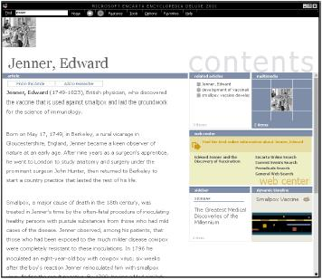

Принципы многих направлений дизайна вполне применимы к дизайну интерфейса, при этом донорами преимущественно выступают книжный, коммуникационный и промышленный дизайны. Итак, какие их принципы могут быть использованы в дизайне интерфейса или web-страницы?
Конструируемый предмет должен быть незаметен в процессе его использования. Странно интересоваться, как выглядит стул, на котором сидишь. Когда человек читает книгу, он чаще всего не замечает её верстку. В то же время предмет должен приятно ощущаться на бессознательном уровне. Для этого:
- Избегайте ярких цветов. Существует очень немного цветов, обладающих и яркостью, и мягкостью (т. е. не бьющих по глазам). На экране их значительно меньше, поскольку в жизни такие цвета обычно моделируются как собственно цветом, так и текстурой, с чем на экране есть проблемы.
- Избегайте острых углов в визуале.
- Старайтесь сделать визуал максимально более легким и воздушным.
- Старайтесь добиваться контраста не сменой насыщенности элементов, но расположением пустот.
- Старайтесь сделать интерфейс максимально насыщенным визуальными закономерностями. Есть универсальное правило – чем больше закономерностей, тем больше гармонии. Даже самые незначительные закономерности всё равно воспринимаются. Под закономерностью понимается любое методически выдерживаемое соответствие свойств у разных объектов, например, высота кнопок может быть равна удвоенному полю диалогового окна.
- Всемерно старайтесь использовать модульные сетки, т. е. привязывайте все объекты к линиям (лучше узлам) воображаемой сетки, которую выдерживайте во всем интерфейсе.
- Старайтесь привязывать все размеры и координаты (как минимум пропорции диалоговых окон) к золотому сечению (0.618 х 0.382).